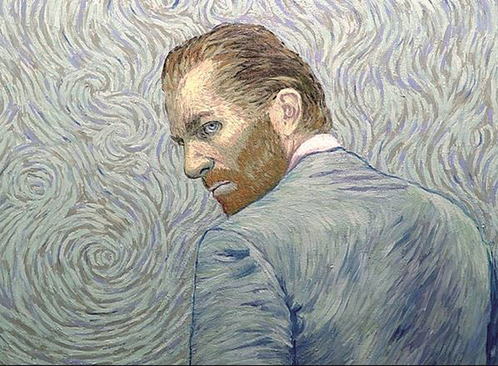
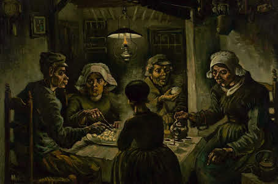
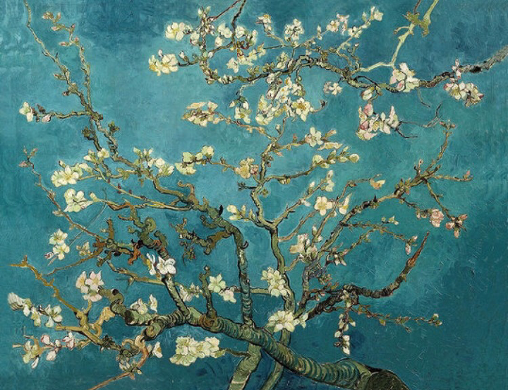
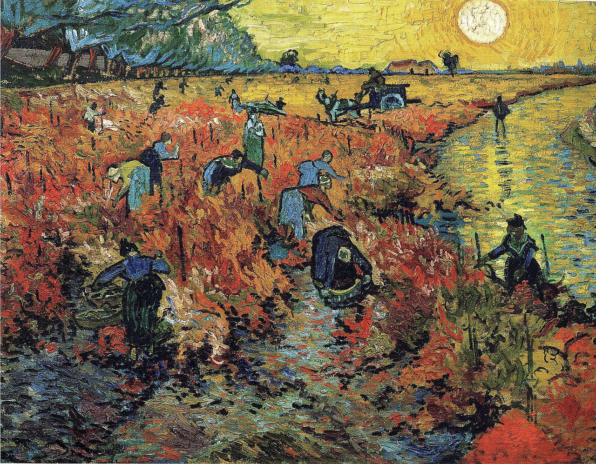

빈센트 빌럼 반 고흐는 네덜란드 화가로 일반적으로 서양 미술사상 가장 위대한 화가 중 한 사람으로 여겨진다.
그는 그의 작품 전부를 정신질환을 앓고 자살을 감행하기 전의 단지 10년 동안에 모두 만들어냈다. 그는 생존기
간 동안 거의 성공을 거두지 못하고 사후에 비로소 알려졌는데, 특히 1901년 3월 17일 파리에서 71점의 반 고흐
의 그림을 전시한 이후 그의 명성은 급속도로 커졌다. 반 고흐는 흔히 후기인상주의 화가로 분류 되며, 또한 인
상파, 야수파, 초기 추상화, 표현주의에 미친 영향이 막대하며 20세기 예술의 여러 다른 관점에서 보일 수 있다.
암스테르담에 있는 반 고흐 미술관은 반 고흐의 작품과 그의 동시대인들의 작품에 바쳐졌다. 네덜란드의 또 다
른 도시인 오테를로에 있는 크뢸러-뮐러 박물관도 상당히 많은 빈센트 반 고흐 그림의 수집을 보유하고 있다.
반 고흐가 그린 몇몇 그림들은 세상에서 가장 비싼 그림들 사이에 순위가 매겨지기도 한다. 1987년 3월 30일에
반 고흐의 그림 '아이리스'가 뉴욕의 소더비즈에서 5390만 미국 달러라는 기록으로 팔렸다. 1990년 5월 15일에
그의 '가셰 박사의 초상'이 크리스티즈에서 8,250만 달러에 일본의 다이쇼와제지 명예회장 사이토 료에이에게
팔림에 따라, 새로운 최고가 기록을 세웠다. 당시 사이토가 지불한 8,250만 달러는 낙찰가 7,500만달러에 경매가
구전 10%가 가산된 금액이다. 이후 '가셰 박사의 초상'은 미국의 수집가에게 4천 400만 달러에 다시 팔렸다.
|
|
 | |
|
|||
|
 |  | |